Matched recipe comparison
Same images and masks across models. Independent color ranges show location only. Category-wide performance is reported in the complete tables. Nondefect mask pixels include intact object and physical background.
bottle/test/good/000.png
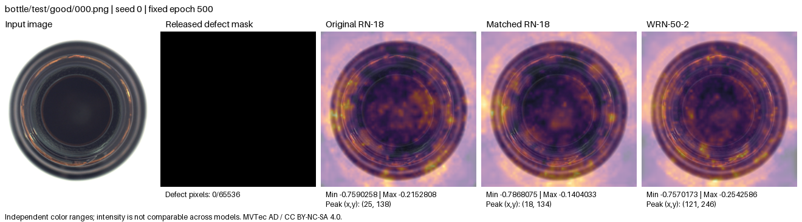
bottle/test/broken_large/000.png
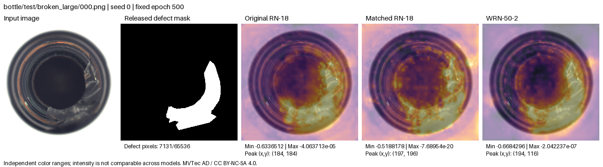
cable/test/good/000.png
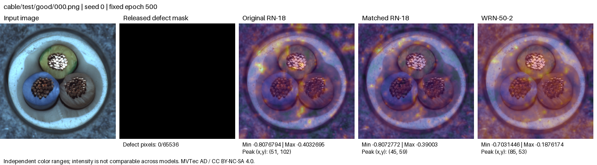
cable/test/bent_wire/000.png
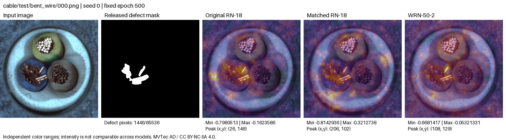
capsule/test/good/000.png
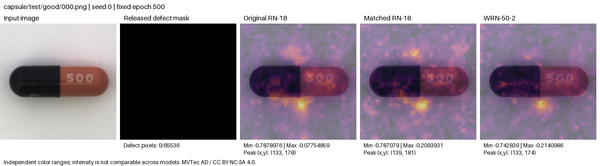
capsule/test/crack/000.png
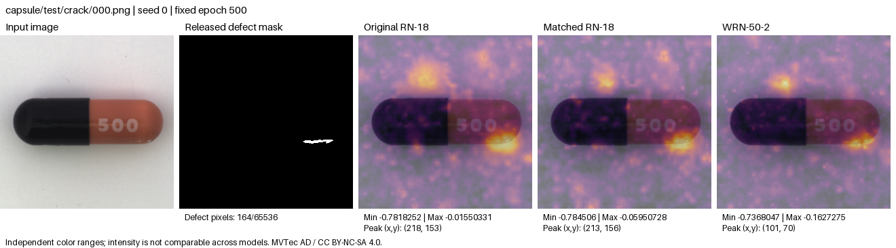
carpet/test/good/000.png
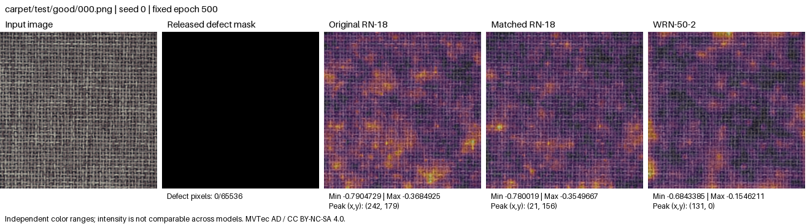
carpet/test/color/000.png
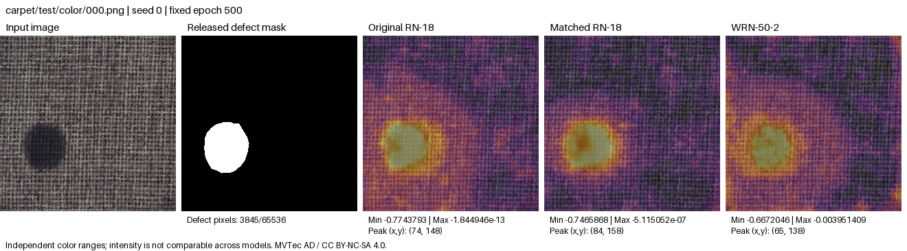
grid/test/good/000.png
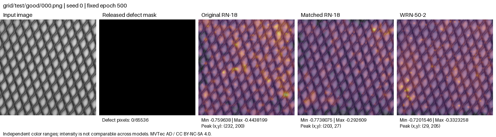
grid/test/bent/000.png
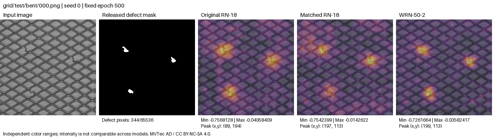
hazelnut/test/good/000.png
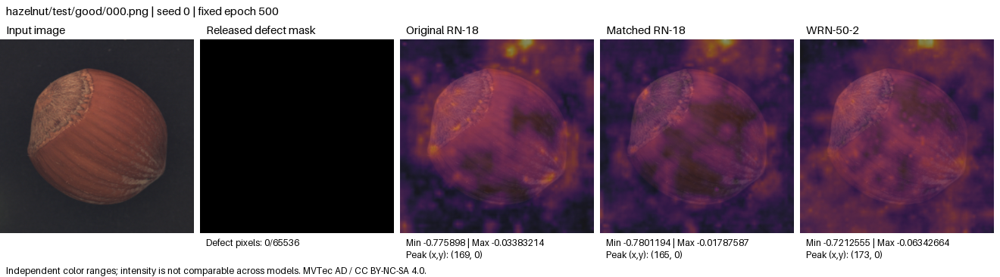
hazelnut/test/crack/000.png
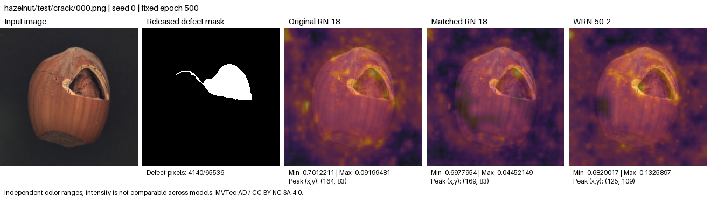
leather/test/good/000.png
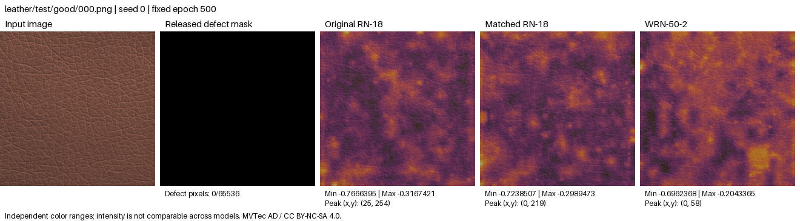
leather/test/color/000.png
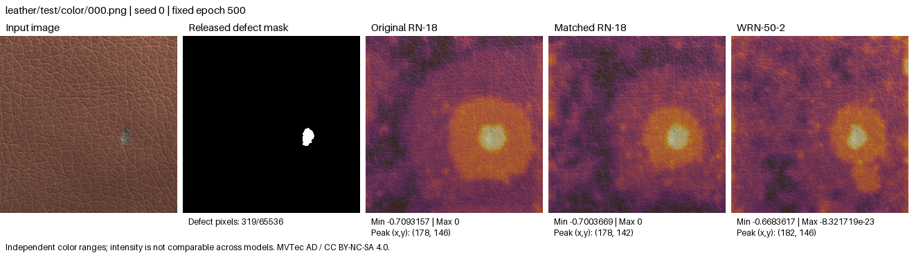
metal_nut/test/good/000.png
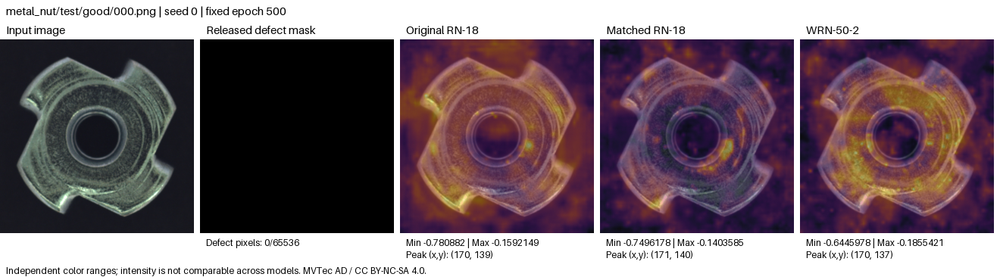
metal_nut/test/bent/000.png
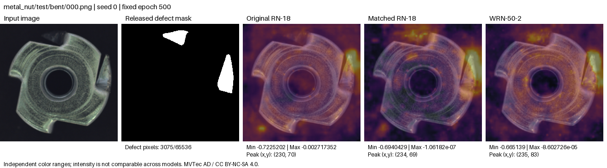
pill/test/good/000.png
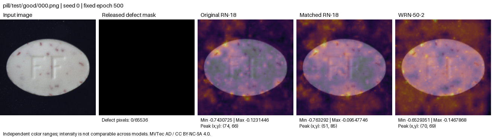
pill/test/color/000.png
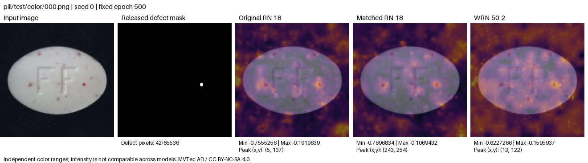
screw/test/good/000.png
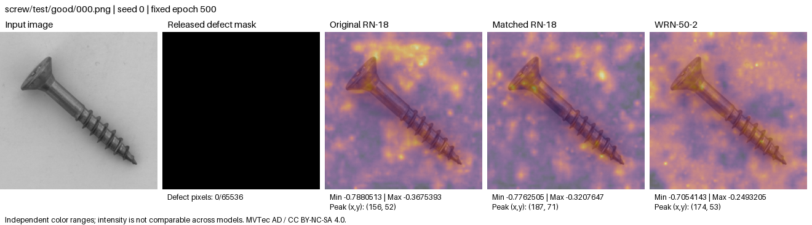
screw/test/manipulated_front/000.png
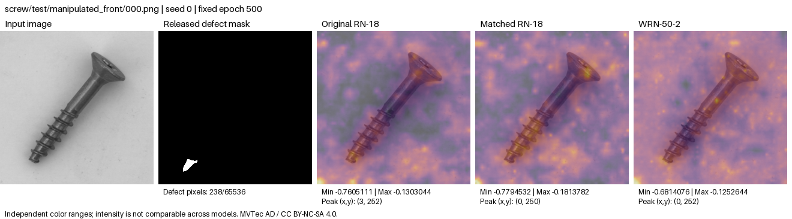
tile/test/good/000.png
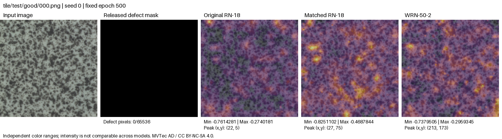
tile/test/crack/000.png
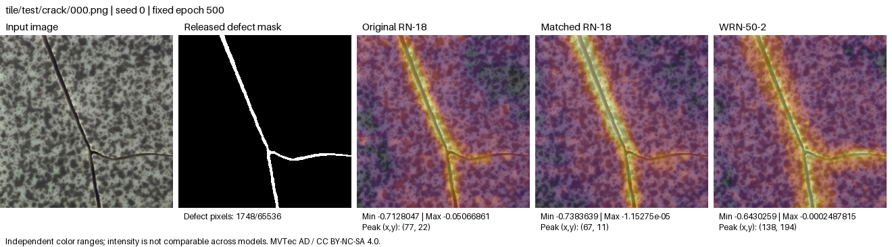
toothbrush/test/good/000.png
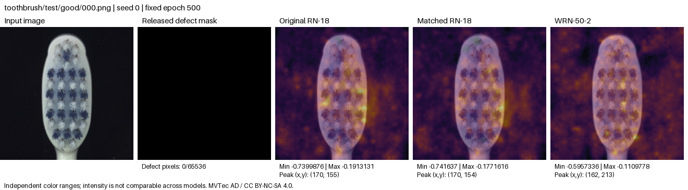
toothbrush/test/defective/000.png
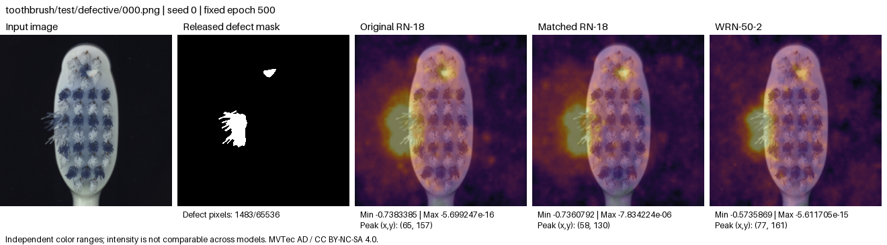
transistor/test/good/000.png
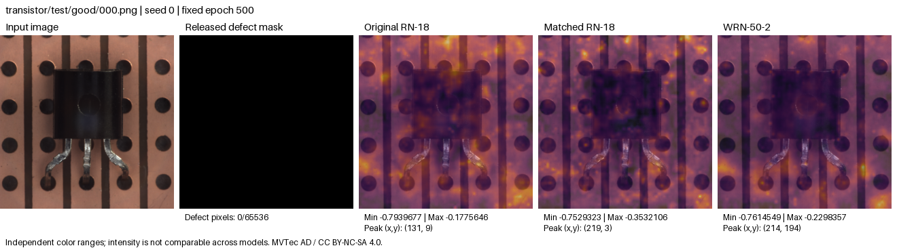
transistor/test/bent_lead/000.png
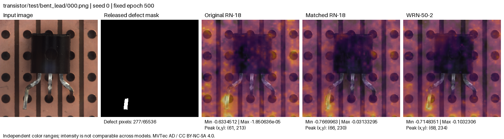
wood/test/good/000.png
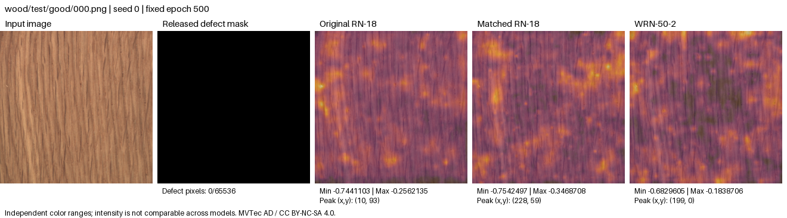
wood/test/color/000.png
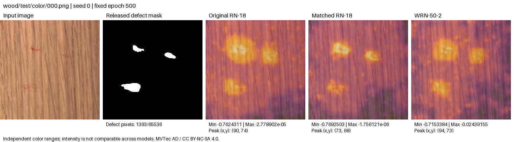
zipper/test/good/000.png
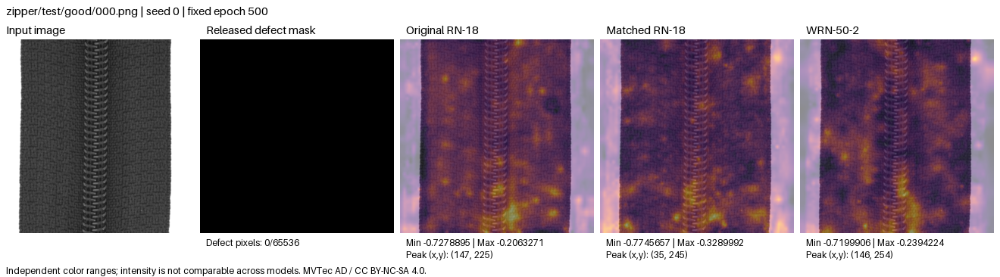
zipper/test/broken_teeth/000.png
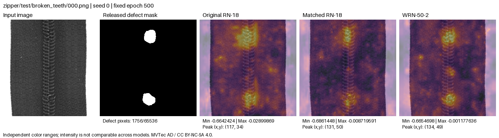
MVTec AD, Bergmann et al. Derived visualization under CC BY-NC-SA 4.0.